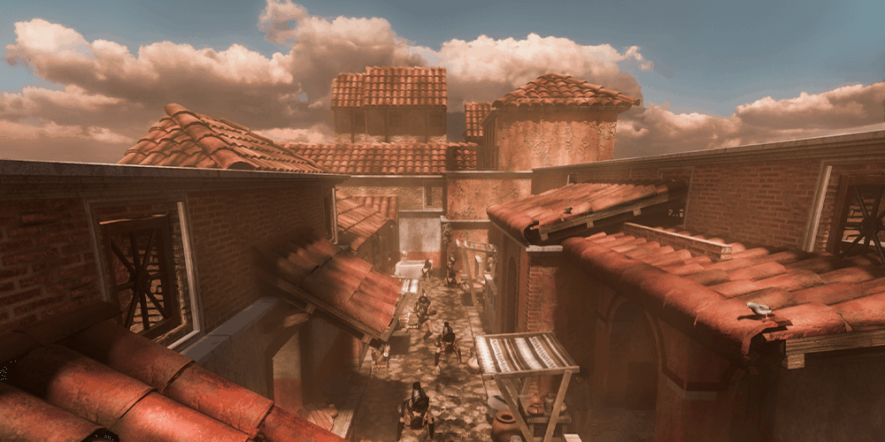
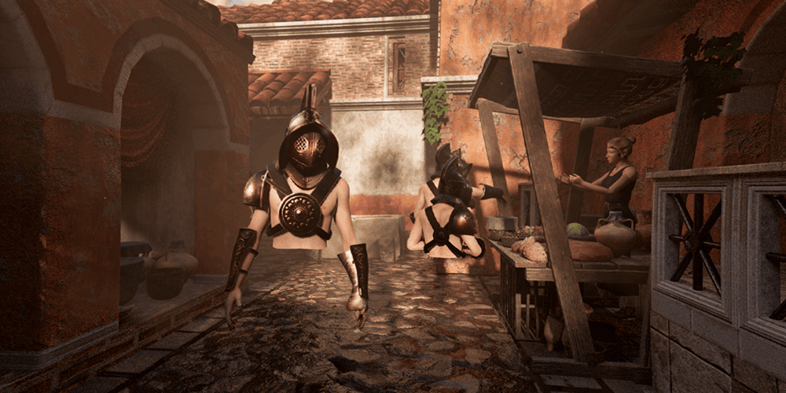
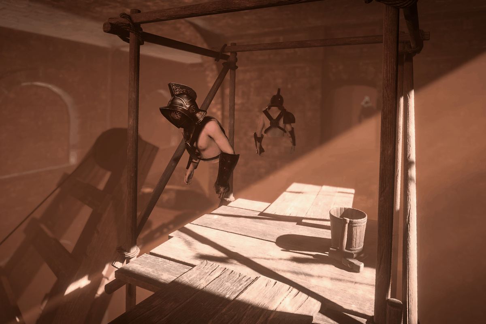
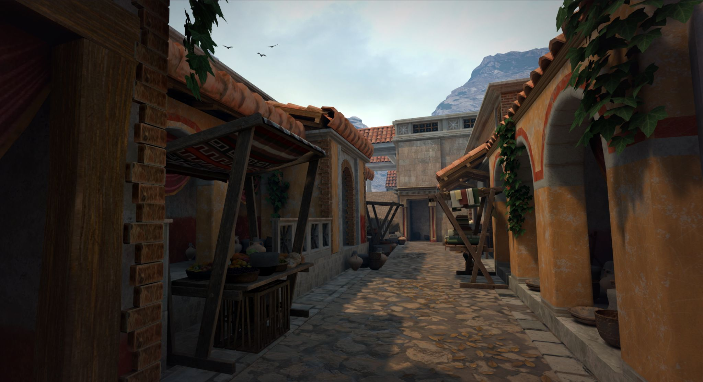
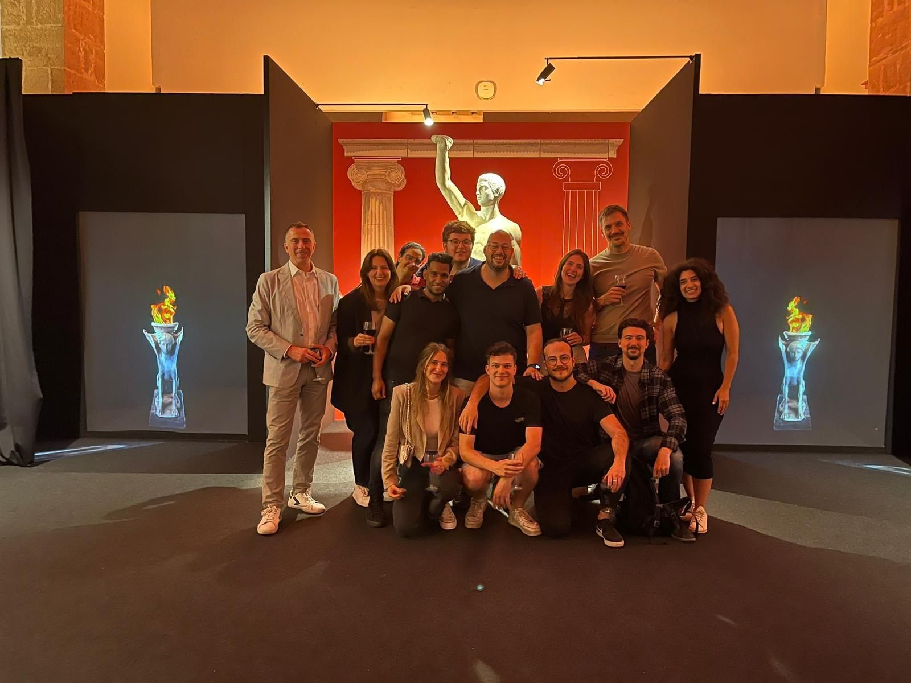

Pompeii, the Last Gladiator






Project information
- Category: Univrse VR Immersive Experience
- Project date: May, 2023
- Location: Museu Marítim de Barcelona
- Project URL:
I participated from the blocking fase unil the end of the project in Pompeii, the last Gladiator, Europe's largest multi-user VR experience, located in Museu Marítim de Barcelona. This experience counts with five scenes that recreate different parts of Pompeii moments before the disaster. I made assets, integrated already made assets, and created three of these scenes: the prison, the street and the dungeon.
It required a lot of hard work to create this experience in less than 3 months, as we were just two technical artist creating scenes in Unity, but it was also a lot of fun and a great experience, definetly one of my proudest works, also it was a lot of fun the opening day in Museu Marítim de Barcelona. This project was possible thanks to MHB Art Investment.